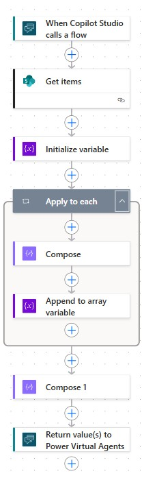

IT Help Desk Copilot & Automation
Built a working IT support concept that allows users to submit tickets, ask follow-up questions and view their latest cases. The solution uses SharePoint lists for storage, Power Automate flows to fetch and format the data, and Copilot Studio to provide a conversational interface.
Ticket forms
Flow automation
SharePoint lists
Copilot Studio
View Screenshot
